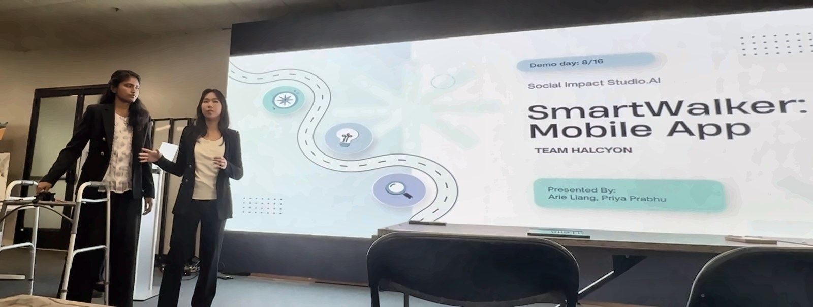
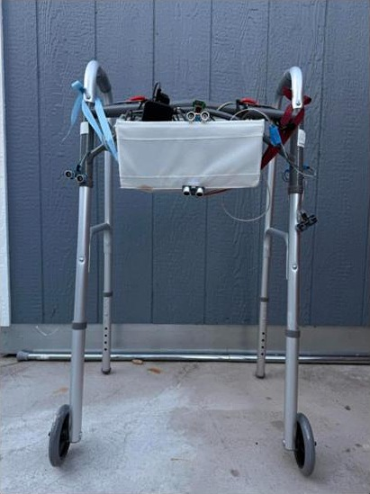
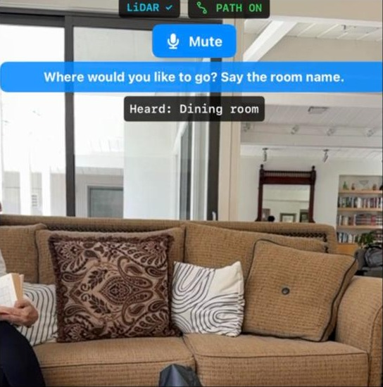
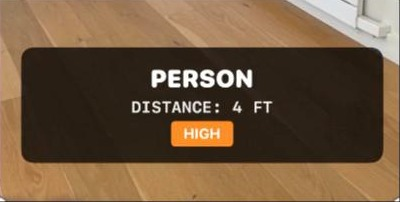

Mobile Walker
2025 to now





"Two months ago, these students had a walker that could see. Today, it can guide."
What I built
It started as an open PilotCity challenge from Social Impact Studio in my Software Engineering class: build an AI walker for visually impaired seniors. I picked it because of seniors at a local care home who got lost on the way to the bathroom, and my grandfather, who was afraid of tripping over things he couldn't see.
On V1 I was product owner and engineering lead, and I pushed the team toward hardware. I built the computer vision, the LLM alerts, the mapping software and the mic and speaker setup, and co-led the ultrasonic wiring and beta testing. Raspberry Pi 4, Camera Module 3, four HC-SR04 sensors, all wired at my bedroom desk. I taught myself Raspberry Pi over four months and fried three sensors doing it.
V2 is a native iOS app in Swift. Priya Prabhu and I are the two co-lead engineers and do all of the engineering.
V1 team: Priya Prabhu, Sushanth Parinathjain, Arjun Rasane, Hamsini Iyer.
What broke
V1's obstacle detection was fast and accurate, and it barely helped. On a two-hour home visit with a 93-year-old tester, we watched him hear "something's ahead" and keep walking toward the wall. A warning wasn't enough. He needed directions. So we rebuilt it from the ground up as V2, an app that tells you where to go: turn here, go straight, stop.
Directions only work if the walker knows where it is inside a house, and that was the problem we couldn't crack. The closest expert we could reach was a satellite engineer. We tried dozens of fixes, including radio beacons and fiducial markers taped around the house. In the end we rebuilt around AR and iPhone LiDAR.
What I learned
Accurate is not the same as useful. V1 detected obstacles well and still didn't help, and I only found that out by watching a tester in his own home. That's why we test V2 in testers' homes, not at a desk.
Know when to stop patching. We tried dozens of localization fixes before admitting the platform was wrong. Switching to iPhone LiDAR got us further than every beacon and marker combined.
Results
V1 at the district showcase led to interviews and an internship at Social Impact Studio.AI. We rebuilt it as V2 in two months and presented it at Demo Day for the first Global Problem Solvers in Residence cohort. Now in beta with 20+ users through in-home visits, heading to the App Store under Halcyon.
One tester can now walk to his chair without bumping into furniture. It still struggles with narrow hallway turns and family members stepping in suddenly. Next: applying to Y Combinator this season.